| 日付 | 2014年10月11日（土） - 2014年10月12日（日） | ||||
|---|---|---|---|---|---|
| 山域 | 東北の山 | ||||
| メンバー | 家族（妻、長女・3歳、長男・1歳） | ||||
| 山行形態 | 子連れ1泊2日ホテル泊 | ||||
| アクセス | 車、ゴンドラ | ||||
| ルート (Map2) |
|
2日目
朝の食事は7:30からと少し遅め。山に囲まれたこの地でこの朝食時間は今一だ。
時間が余ったので辺りを散歩してみることにする。
この辺りはたくさんのペンションが建ち並んでいる。
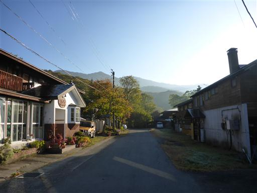
夜はかなり冷えたのか、霜が降りている。
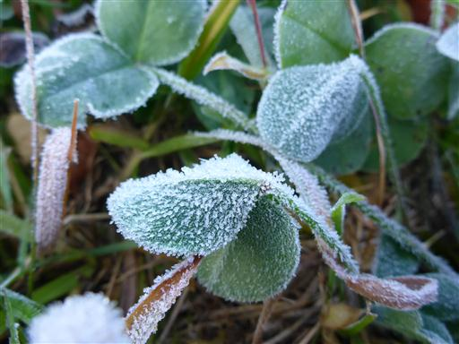
朝靄の中に磐梯山が浮かんでいる。
さっと朝食をとったら浄土平に向けて出発する。
朝食の遅さはネックだったが、宿の人は非常に親切で良い宿だった。
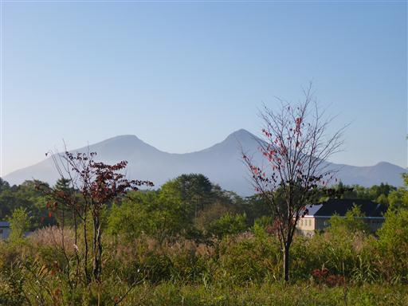
本日は吾妻連峰の一峰、東吾妻山に行く予定だ。
登山口の浄土平に向けて展望の良い磐梯吾妻スカイラインを走っていく。
東日本大震災以降、客足が遠のいたため、この道は無料化されている。
途中、展望台があったので車を停めて景色を眺める。
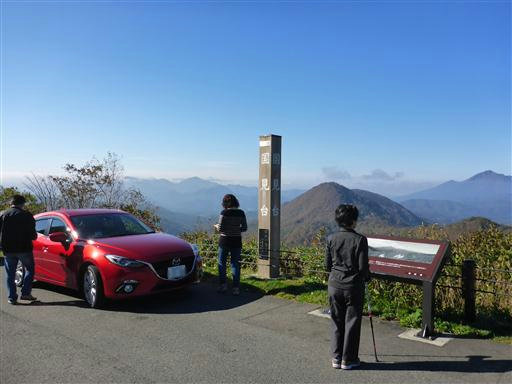
目の前には鋭角に聳える磐梯山が見える。
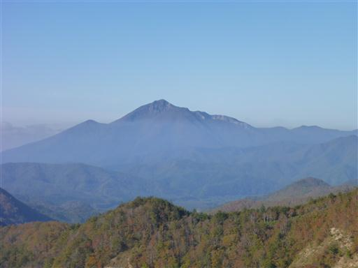
遠くの方は見事な雲海だ。
素晴らしい景色に後ろ髪を引かれつつ、先を急ぐ。
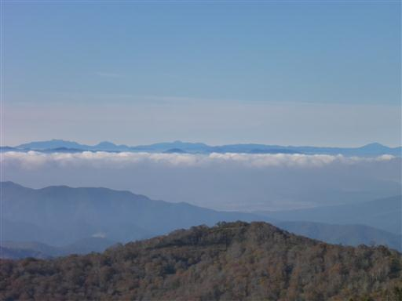
浄土平の大駐車場に到着。次々と車が入ってくる。
ここは、以前吾妻山を縦走した時に来た場所だ。
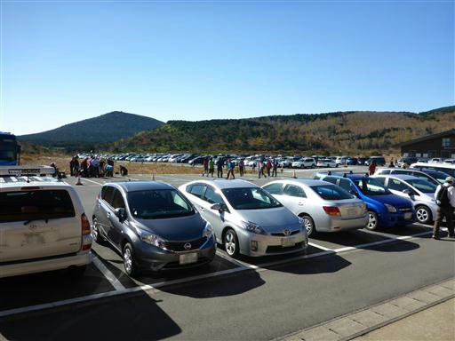
準備をしたら東吾妻山に向けて出発。まずは浄土平の中の木道を歩いていく。
奥に見える平べったい山が、目指す東吾妻山だ。
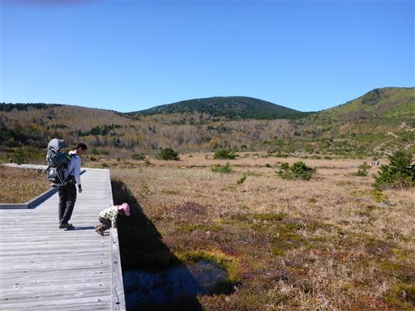
目の前に見えるのは一切経山。ここも活火山だ。
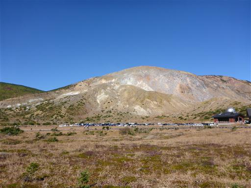
所々に池塘が見られる。
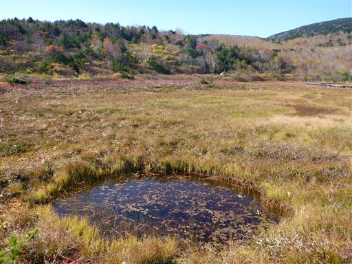
黄緑色に見えるのはハナゴケだろうか？
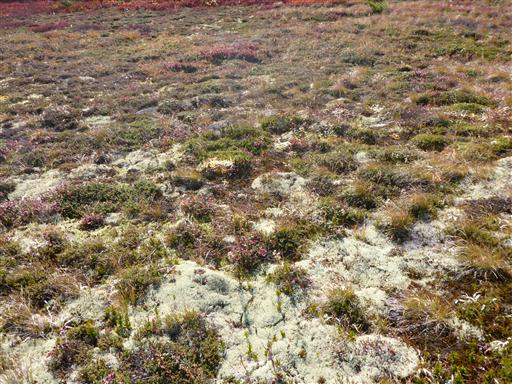
娘は木道歩きが苦手だったが、今ではだいぶ上手になった。
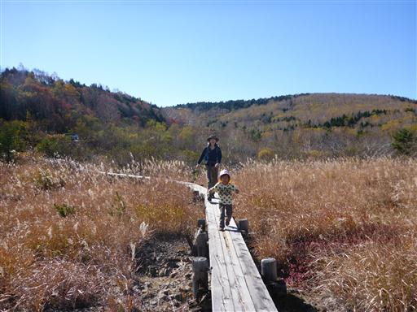
湿原の周りの木々は紅葉が美しい。
この辺りは標高が高いので、紅葉はもうほとんど終わりかけだ。
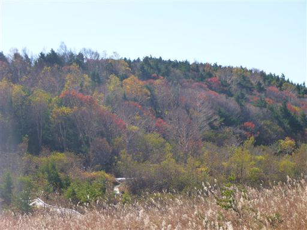
湿原遊歩道が終わり、大きな登山道と合流する。
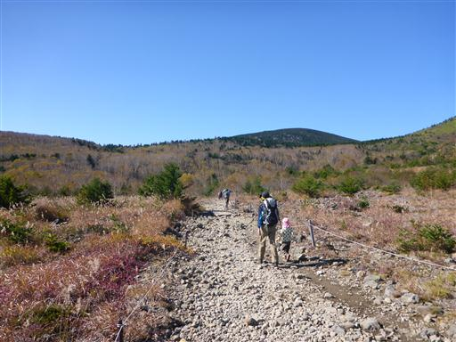
しばらく歩くと傾斜が出てきて、ようやく登山道らしくなってくる。
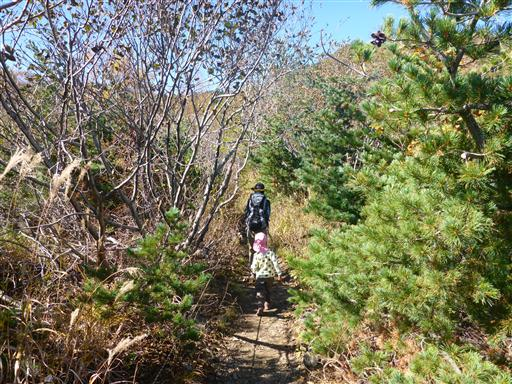
道は所々ぬかるんでいる。あまりに酷い場所は娘を抱っこして通過する。
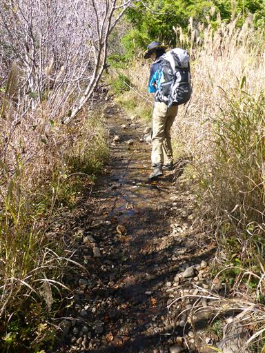
少し登ると展望が開けてくる。一切経山の一角が見えている。
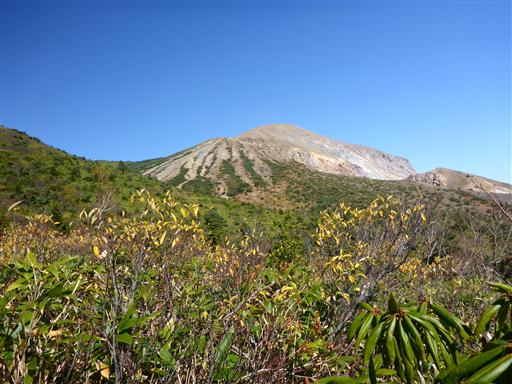
山の中腹から噴煙が上がっているのが見える。
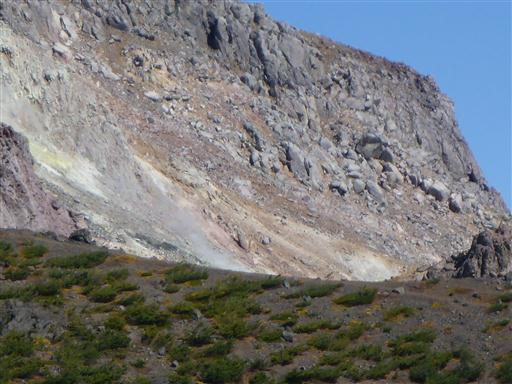
眼下は見事な雲海だ。
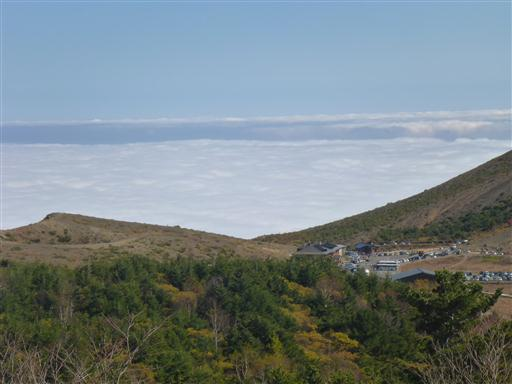
美しい笹原の広がる道を登っていく。
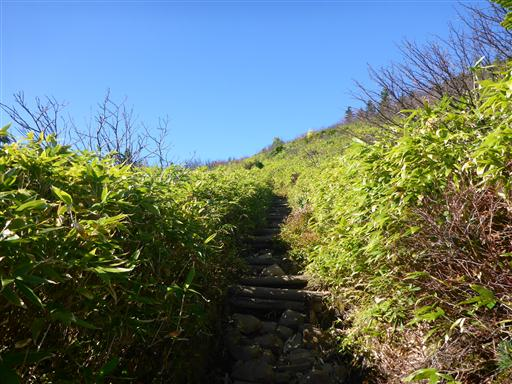
吾妻小富士がぽっかりと大きな口を開けている。
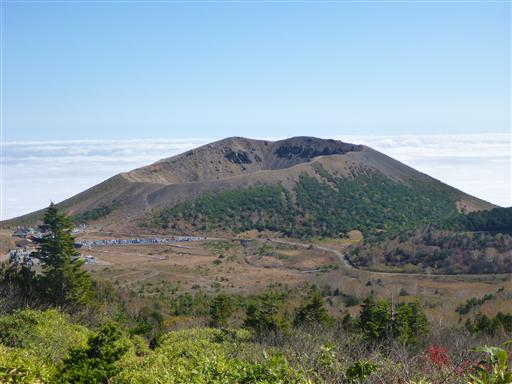
傾斜が緩くなると、目指す東吾妻山が見えてくる。
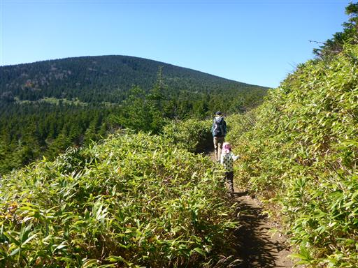
大きく開けた姥ヶ原と呼ばれる平原に出てくる。
のんびりと木道を歩いていく。
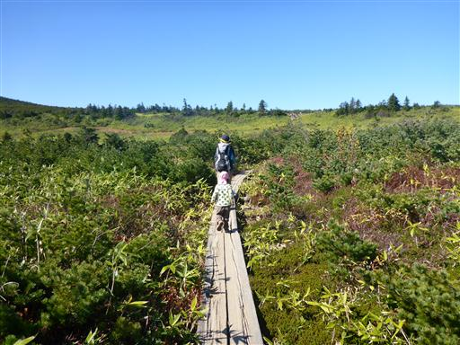
平原を流れる小さな川。流れは少ないが、水がきれいだ。
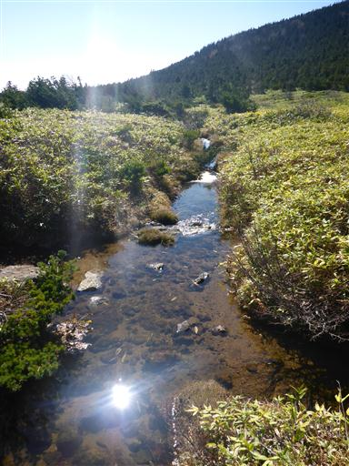
少し高台に登ったところで鎌沼からの登山道と合流する。
目の前には美しい平原、その向こうには雲海が広がっている。
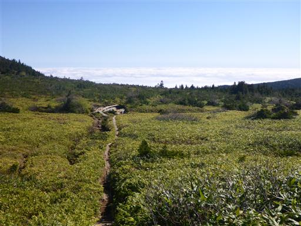
緩やかな平原は続く。どこを見渡しても美しい景色だ。
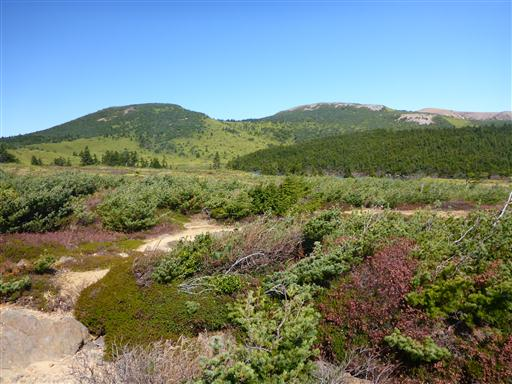
小さな木が皆、右側に倒れて地面に這いつくばっている。
楽園のような場所だが、悪天候時や冬は非常に厳しい環境になるのだろう。
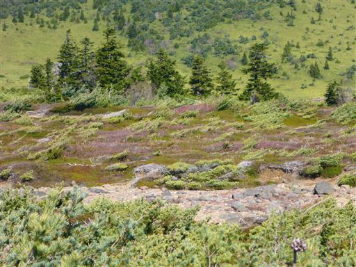
さらに木道を進むと再び分岐点に到着する。
まっすぐ行くと、谷地平湿原に下ることができる。
ここで左折して東吾妻山を目指す。
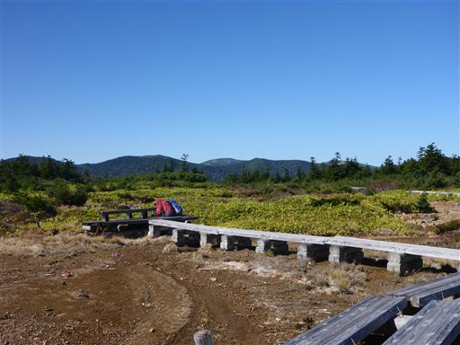
東吾妻山の登山道に入った瞬間、周囲の景色は一変する。
鬱蒼とした針葉樹林帯で景色は全く望めない。
緩やかに見えた山だが、登山道の傾斜はそこそこあり歩きにくい。
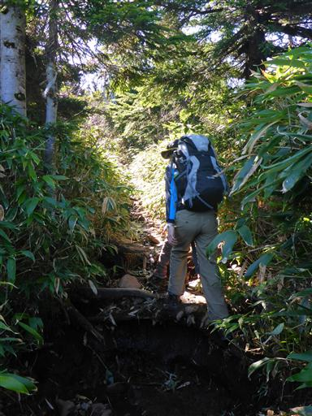
40分ほど樹林帯を登ると、森林限界を超えて突然視界が広がる
東吾妻山頂↑の標識が立っている。
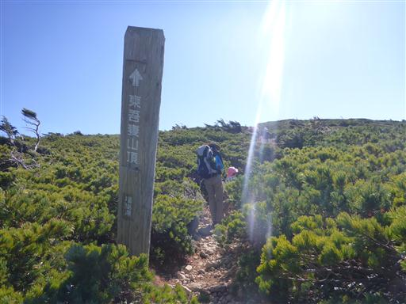
斜面をしばらく登ると、大展望の頂に到着する。
東吾妻山、標高1975mだ。
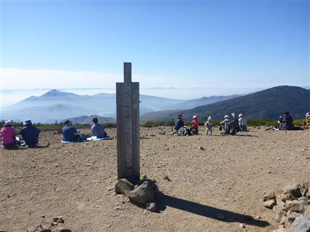
山頂からの展望は素晴らしい。目の前に広がるのは吾妻連峰。
一切経山から西大巓まで、かつて歩いた山々がズラッと並んでいる。
稜線は滑らかな曲線が続いていて、特徴的なピークは見当たらない。
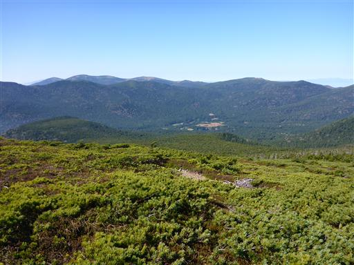
一切経山と、眼下には鎌沼。
一切経山の背後に見える山影は蔵王山だ。
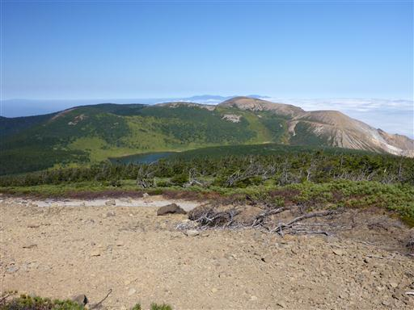
南西方向には磐梯山が一際目立っている。
下界は靄がかかっていて幻想的な景色だ。
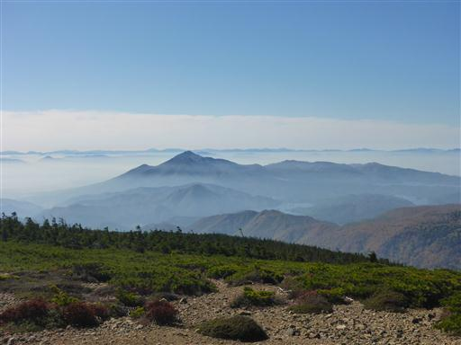
磐梯山の噴火によってできた檜原湖、小野川湖、秋元湖。
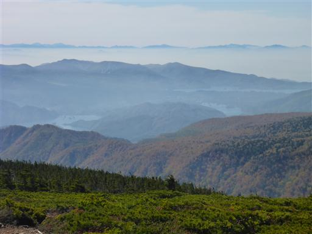
雲海に浮かぶ日光・那須の山々。
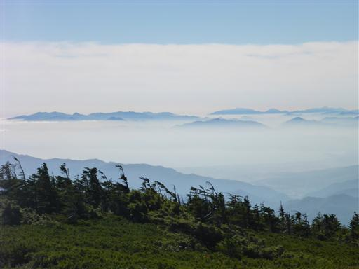
こちらも雲海に浮かぶ吾妻小富士。
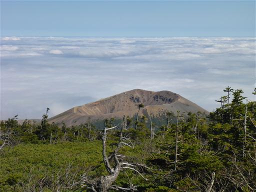
谷地平湿原が眼下に見えている。
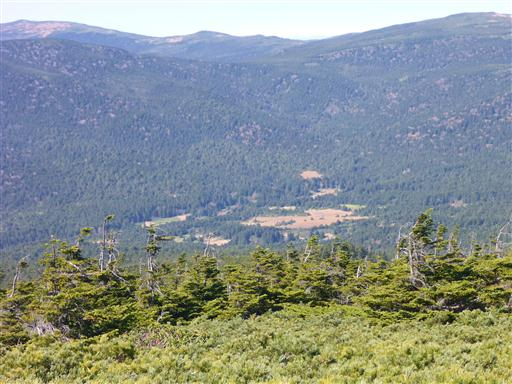
遥か遠くにある朝日連峰も比較的はっきりと見える。
今日は本当に空気がきれいだ。
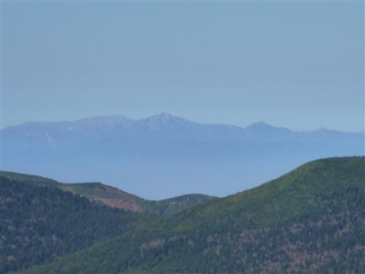
さほど混雑していない山頂でゆっくり時を過ごす
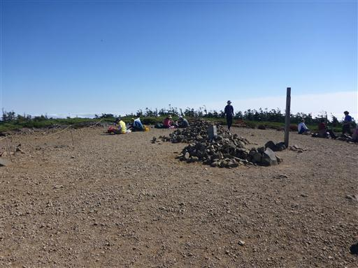
大展望の頂を満喫したら、名残惜しいが下山を開始する。
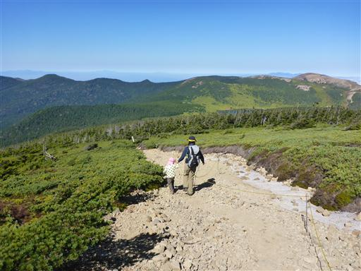
再び鬱蒼とした樹林帯を下る。
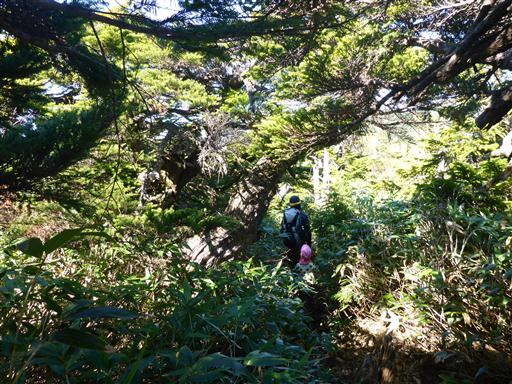
足元には表面がデコボコの変わった形をした石が多く転がっている。
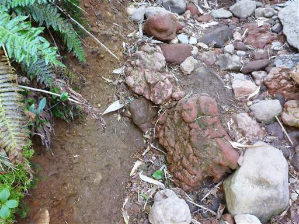
東吾妻山の斜面を下り終えると再び木道だ。
下山は鎌沼を経由する道を選ぶ。
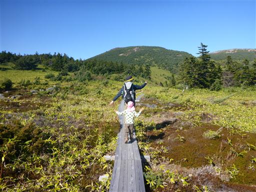
眼下に鎌沼が見えてきた。鎌の形をしているからこう名付けられたそうだ。
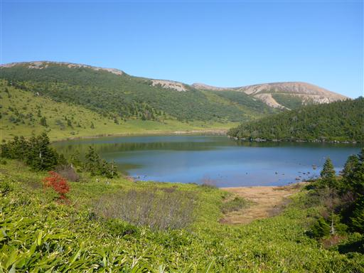
湖の畔に下りてくる。美しい景色が広がっている。
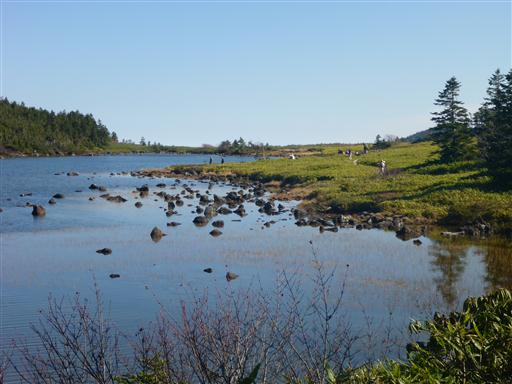
水は驚くほどきれいで、湖底の石がはっきりと見える。
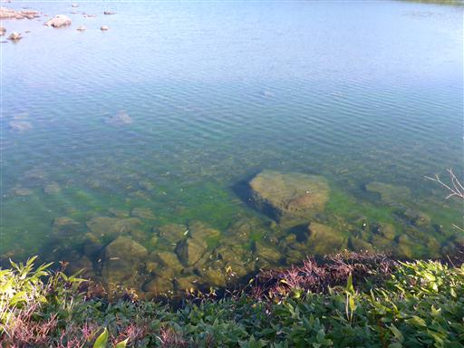
湖岸沿いにつけられた木道を歩いていく。
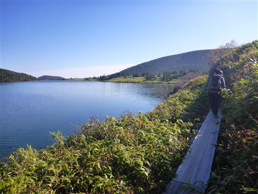
湖の反対側は眩しい笹原の斜面が広がっている。
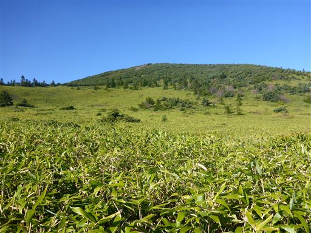
湖の向こうに、先ほど登った東吾妻山がゆったりと横たわっている。
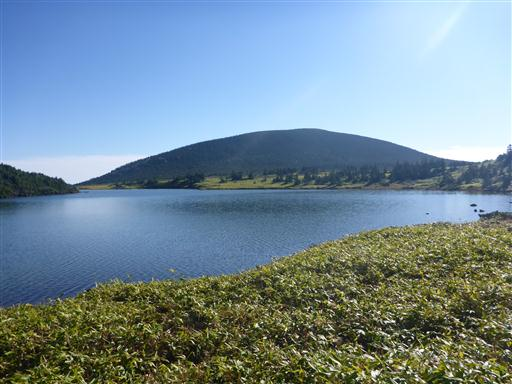
どこまでも木道は続いていく。昨日のような混雑がないのが素晴らしい。
湖岸に下りる道があったので、腰を下ろしておやつタイムにする。
子供がトイレに行きたがっているので、急いで出発。
酸ヶ平と呼ばれる湿原地帯を速足で歩いていく。
目指すは左手奥に見える酸ヶ平避難小屋だ。
池塘が広がっていて、この辺りも美しい風景だ。
酸ヶ平避難小屋に到着。トイレがあるのがありがたい。
あとは駐車場までわずかの距離を下るのみ。
眼下に吾妻小富士が見えてくる。
良く良く見ると、吾妻小富士の隣にも小さな噴火口がある。
こちらの噴火口は真ん中に水がたまっている。桶沼だ。
まるでドーナツのような形をしている。
左手斜面はわずかに残った紅葉が見られる。
駐車場が近づいてきた。
振り返ると迫力ある一切経山が聳えている。
斜面を下ったら、あとは平坦な道を歩くのみ。
しかし、石がゴロゴロしていて歩きにくく、娘は度々こけている。
2日連続の山で足がかなり疲労しているようで、もうグズグズだ。
一切経山への最短コースは噴火活動の活発化により立入禁止になっている。
2008年に一切経山に登った時にはこの道を通れたのだが、その直後に閉鎖されたようだ。
小さな橋を渡って無事、駐車場に到着する。
もう3時半なのだが、吾妻小富士に通じる道は数多くの観光客が列をなしている。
浄土平に別れを告げて、帰宅することにする。
安達太良山のついでに登った東吾妻山だが、安達太良山よりも印象深い登山となった。
人が多い山は、やはり自分には向いていない。
吾妻山は目立つ山ではないが、いつ来ても素晴らしい景色を見せてくれる良い山だ。
帰りの磐梯吾妻スカイラインから、再び景色を眺める。
こちらは靄に浮かぶ安達太良山。

本日、何度も眺めた磐梯山も見納めだ。いつか登る機会はあるだろうか？
昨日も今日も一日中快晴で、風もなく、山日和の2日間だった。